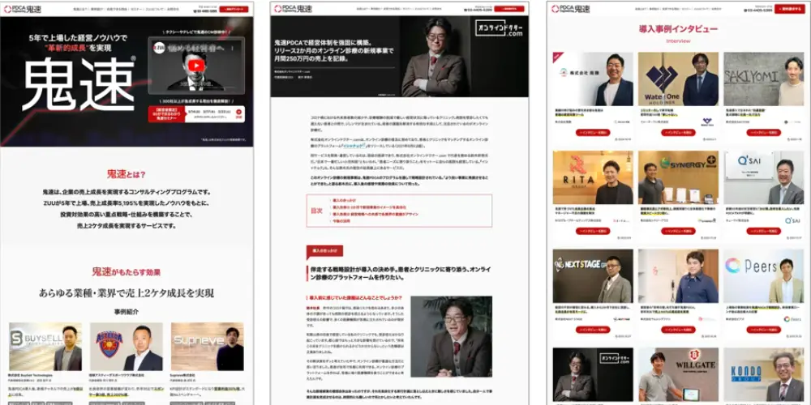
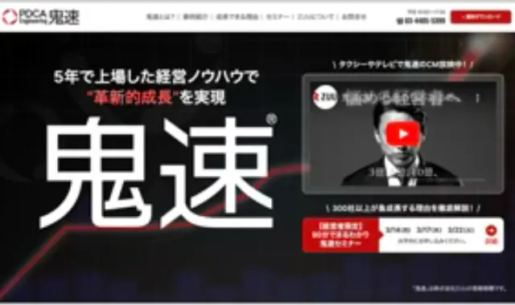
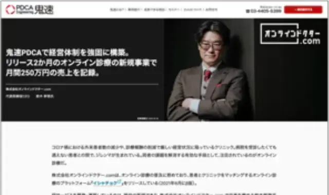
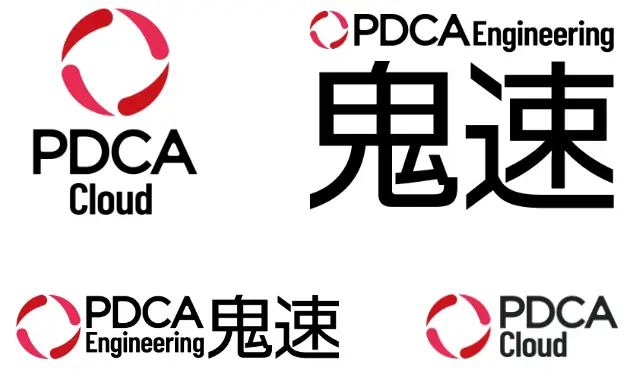
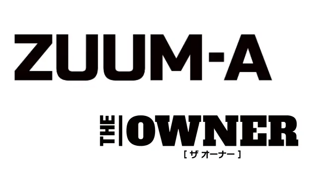
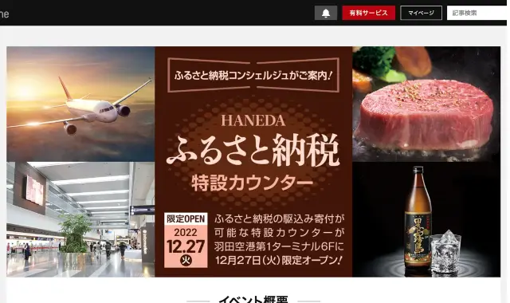
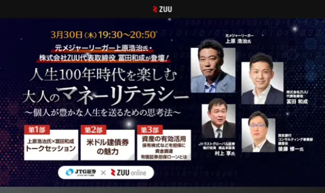
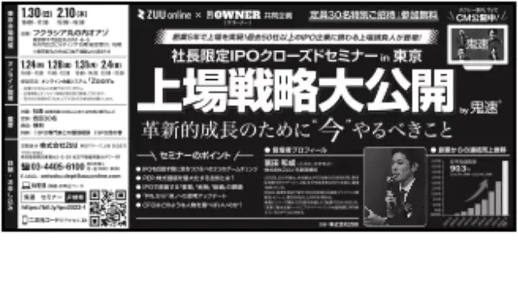
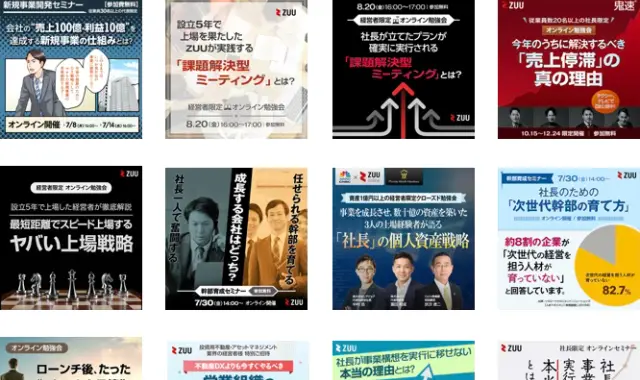

2019 — 2025
株式会社ZUU
Webサービス・オウンドメディア制作・運用

01 / SERVICE SITE
Service Site
コンサルティングプログラム「鬼速PDCA」のサービスサイトをAdobe XDで設計し、コーディングからその後の更新まで担当。


02 / BRANDING
Branding
鬼速PDCA、PDCA Cloud、THE OWNERなど、ロゴデザインからガイドライン策定まで担当。


03 / LANDING PAGES
Landing Pages
各種ビジネスセミナーLPやサービス案内サイトを、テーマや原稿をもとにデザイン・レイアウト・コーディング。


04 / GRAPHIC / DTP
Graphic / DTP
バナー、セミナー案内、冊子、新聞広告などWeb以外のクリエイティブにも対応。


05 / LONG-TERM OPERATION
Long-term Operation
約6年間の継続参画を通して、単発制作だけでなく日々の更新・改修・改善まで担当しました。